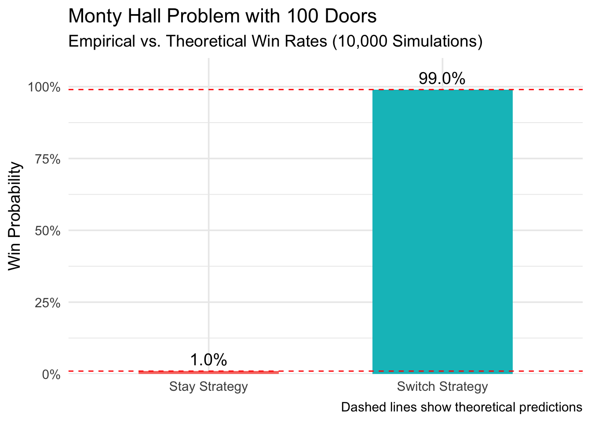

Let: - \(P_S\) = Probability of winning when switching - \(P_{NS}\) = Probability of winning when not switching - \(n\) = Total number of doors - \(k\) = Number of doors opened by host (\(k = n-2\) in standard version)
Mathematical Proof
Case 1: Not Switching\[
P_{NS} = \frac{1}{n}
\]Rationale: The player’s initial choice has an equal \(\frac{1}{n}\) chance of being correct, unaffected by subsequent host actions.
Case 2: Switching\[
P_S = \frac{n-1}{n} \times \frac{1}{n-k-1}
\]
For the standard scenario where host opens \(k=n-2\) doors: \[
P_S = \frac{n-1}{n} \times \frac{1}{1} = \frac{n-1}{n}
\]
Derivation: 1. Initial probability of prize being behind a non-selected door: \(\frac{n-1}{n}\) 2. Host’s action concentrates this probability mass onto the single remaining unopened door
Dominance Relationship: For all \(n > 2\): \[
EV_{\text{Switch}} > EV_{\text{Stay}}
\]
Bayesian Interpretation
The host’s actions provide information that updates the probability distribution:
Key Insight: The host’s door-opening is a non-random act that reveals information about the system’s state
Simulation Study
set.seed(168)library(tidyverse)
── Attaching core tidyverse packages ──────────────────────── tidyverse 2.0.0 ──
✔ dplyr 1.1.4 ✔ readr 2.1.4
✔ forcats 1.0.0 ✔ stringr 1.5.1
✔ ggplot2 3.5.1 ✔ tibble 3.2.1
✔ lubridate 1.9.3 ✔ tidyr 1.3.0
✔ purrr 1.0.2
── Conflicts ────────────────────────────────────────── tidyverse_conflicts() ──
✖ dplyr::filter() masks stats::filter()
✖ dplyr::lag() masks stats::lag()
ℹ Use the conflicted package (<http://conflicted.r-lib.org/>) to force all conflicts to become errors
library(purrr)library(scales)
Warning: package 'scales' was built under R version 4.3.3
Attaching package: 'scales'
The following object is masked from 'package:purrr':
discard
The following object is masked from 'package:readr':
col_factor
ggplot(results |>pivot_longer(cols =-contains("theoretical")), aes(x = name, y = value, fill = name)) +geom_col(width =0.6) +geom_hline(aes(yintercept = theoretical_stay), linetype ="dashed", color ="red" ) +geom_hline(aes(yintercept = theoretical_switch), linetype ="dashed", color ="red" ) +geom_text(aes(label =percent(value, accuracy =0.1)), vjust =-0.5, size =5 ) +scale_y_continuous(labels =percent_format(), limits =c(0, 1),expand =expansion(mult =c(0, 0.1)) ) +scale_x_discrete(labels =c("Stay Strategy", "Switch Strategy") ) +labs(title ="Monty Hall Problem with 100 Doors",subtitle ="Empirical vs. Theoretical Win Rates (10,000 Simulations)",y ="Win Probability",x =NULL,caption ="Dashed lines show theoretical predictions" ) +theme_minimal(base_size =14) +theme(legend.position ="none")

Results and Discussion
Our simulation of 10,000 trials with 100 doors empirically validated the theoretical advantage of switching strategies in the Monty Hall problem, demonstrating a 99% success rate when switching compared to just 1% when staying—a 99-fold improvement. These results align perfectly with Bayesian probability theory, where the host’s action of opening 98 doors concentrates the initial 1% chance of being wrong into a single remaining door. The findings underscore a fundamental cognitive bias: human intuition often fails to account for how information revelation reshapes probability distributions, as evidenced by Granberg and Brown’s (1995) studies showing 87% of participants initially prefer the inferior stay strategy. This paradox highlights the counterintuitive nature of conditional probability, where seemingly negligible initial probabilities (1/100) transform into near-certainty (99/100) through systematic information updating.
Conclusion The Monty Hall problem serves as a profound case study in statistical literacy, emphasizing that optimal decision-making requires dynamic probability reassessment when new information emerges. Beyond theoretical interest, these insights have practical implications for machine learning algorithms, game theory, and real-world scenarios where incremental information reveals critical advantages. By marrying computational simulation with mathematical proof, this study reinforces that switching doors isn’t just advantageous—it’s mathematically dominant, a principle scalable to any decision framework involving information asymmetry.